If you landed in this page it's most likely because you bought a copy of Acanto, so first a big THANK YOU! It really helps support my living as a freelance musician. I hope you enjoy the sequencer as much as I enjoyed making it.
If you ever have any questions or comments, feel free to contact me (my name is Flavio).
Read below for a fuller explanation of the demo that came with your download...
This session is made up of three tracks, each playing its own instrument, as follows...
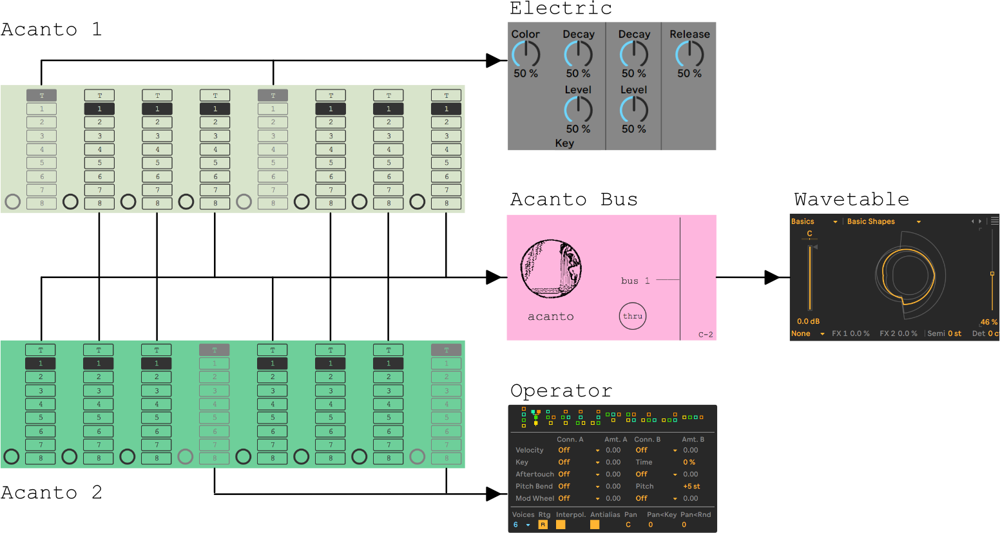
What's Happening on Track 1
An instance of Acanto (we'll call it Acanto 1 from now on) is routed to Electric:
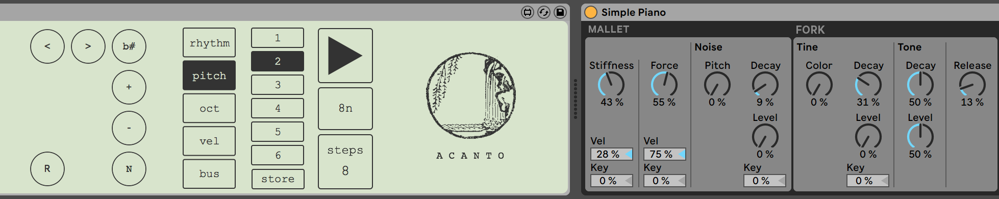
It's playing the following 2 phrases...
...accomplished by chaining presets 1 & 2 together:
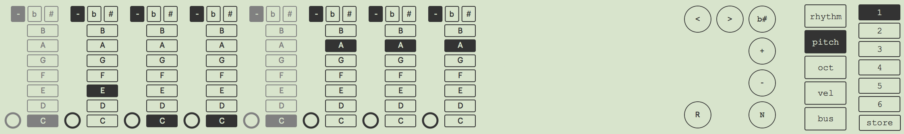
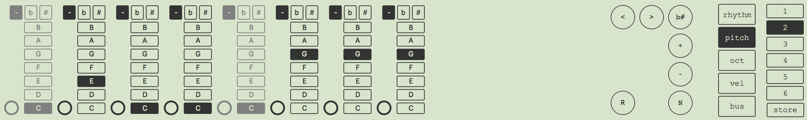
Preset 1 is set to loop the first phrase 4 times before jumping to
Preset 2:
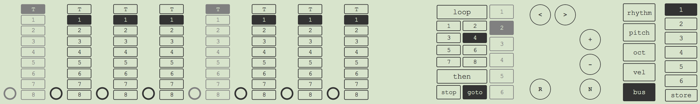
Likewise, Preset 2 is set to loop the 2nd phrase 4 times as well, before
jumping back to Preset 1
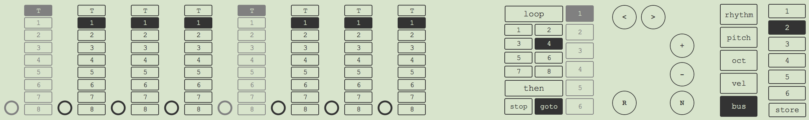
Automation
Additionally, the duration scaler and velocity scalers have been
automated...
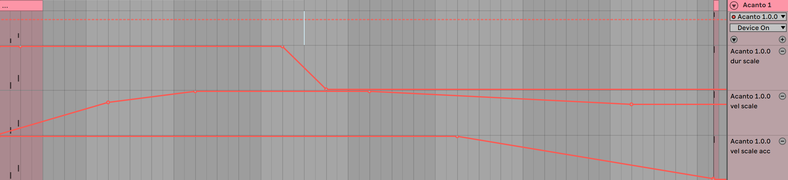
Acanto 1's Duration Scaler:
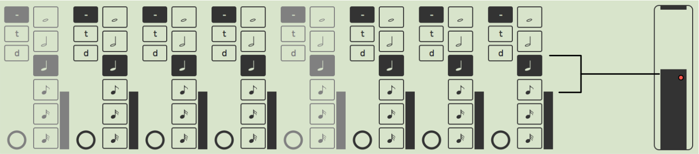
Acanto 1's Velocity Scalers – the scaler on the left affects the non-accented velocities
while the scaler on the right affects the accented velocities
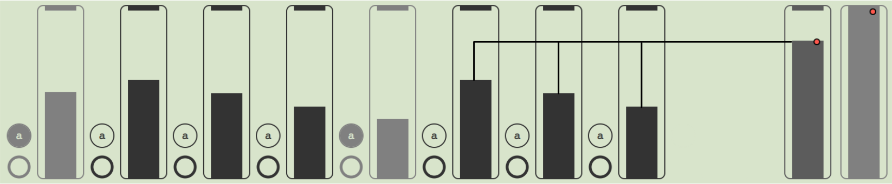
What's Happening on Track 2
A 2nd instance of Acanto is routed to Operator:
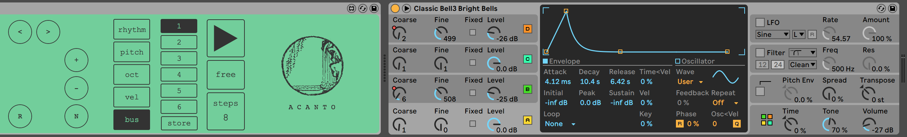
...and it's playing the following 2 phrases...
...which is accomplished in two stages:
Stage 1
Set the play quantization to 'free':
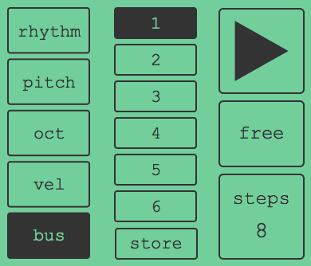
...then trigger on the pickup
(notice that the note trigger – C#1 – is slightly ahead of the beat):
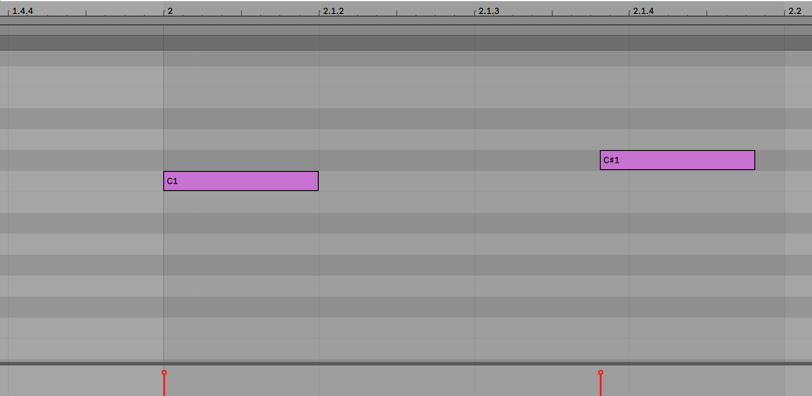
Stage 2
Chain presets 1 & 2 together (just like in Acanto 1):
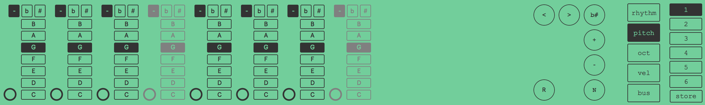
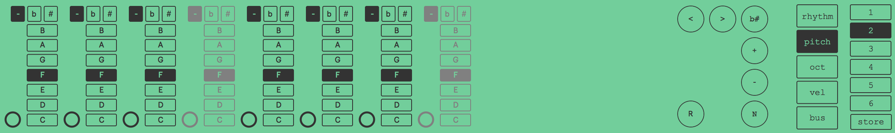
Like with Acanto 1, Preset 1 is set to loop the first phrase 4 times before jumping to
Preset 2:
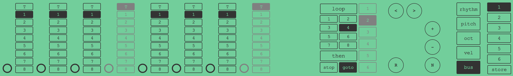
And Preset 2 is also set to loop 4 times before jumping back to Preset 1
Automation
Track 2 features automation on both Acanto 1 and Operator...
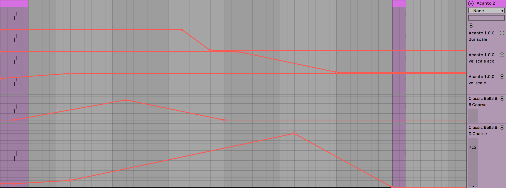
The pitch of both FM modulators is automated to get that Vangelis-like bell sound...
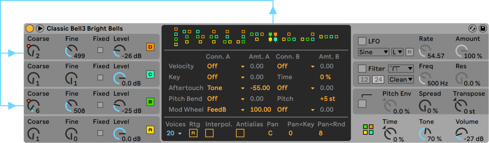
What's Happening on Track 3
Track 3 has an instance of an Acanto Bus 1 device, followed by Wavetable...
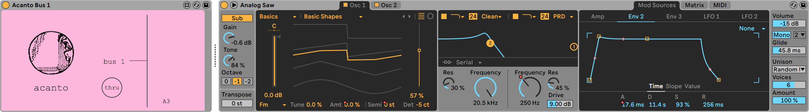
The Acanto Bus 1 device receives any notes sent to 'Bus 1' from any Acanto device instantiated on your Live set. Most of the sounds in this session come from Wavetable, which is receving on and off beats from Acanto 1 & Acanto 2 respectively.
There are no MIDI clips recorded on this track, just automation.
The most audible automation is on Wavetable's sound parameters.
There's also a little bit of delay added to the mix...
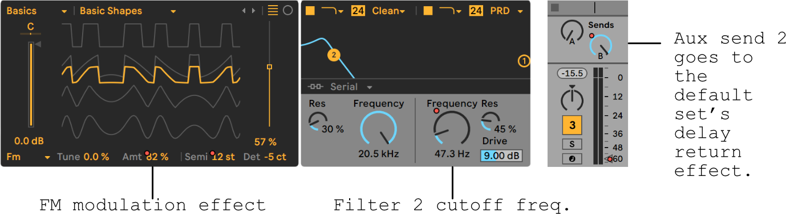